ساخت سفارشی با فوم EPS و برش CNC
دکور و استند
با یونولیت
دکور، استند نمایشگاهی، ماکت و مجسمه، و قالب بستهبندی را از فوم EPS میسازیم؛ با مدلسازی سهبعدی و برش CNC. فرم بزرگ با وزن کم، نصب بدون سازهی سنگین. روش کار و تلورانس ابعاد در برش CNC یونولیت آمده است.
01فرم بزرگ و پیچیده
02نصب بدون سازهی سنگین
03پوشش ضدآب و رنگ
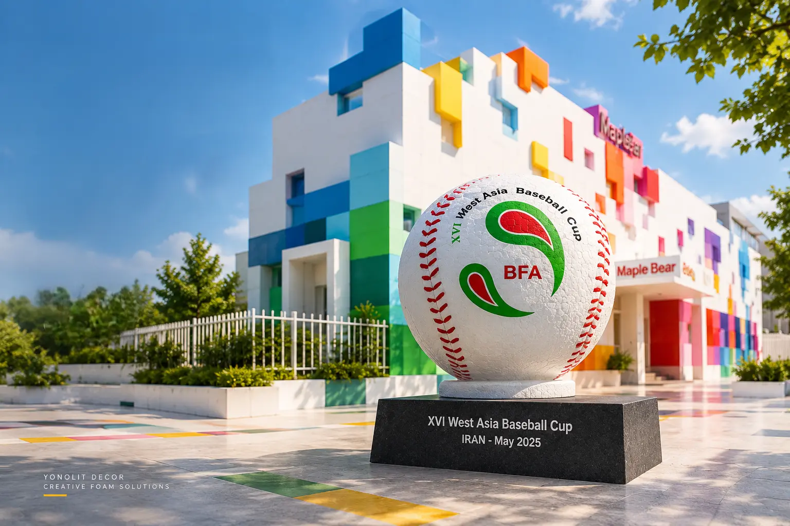
EPSFORM[ 01 / 04 ]
فرمهای بزرگ، وزن کم ✳ دقت CNC، آزادی طراحی ✳ ساخت سفارشی برای پروژهی شما ✳
سه گروه خدمت
سه گروه خدمت،
سه خروجی مشخص
هر پروژه یکی از این سه مسیر را میرود. در هر سه، خروجی یک فرم دقیق و آمادهی نصب است.
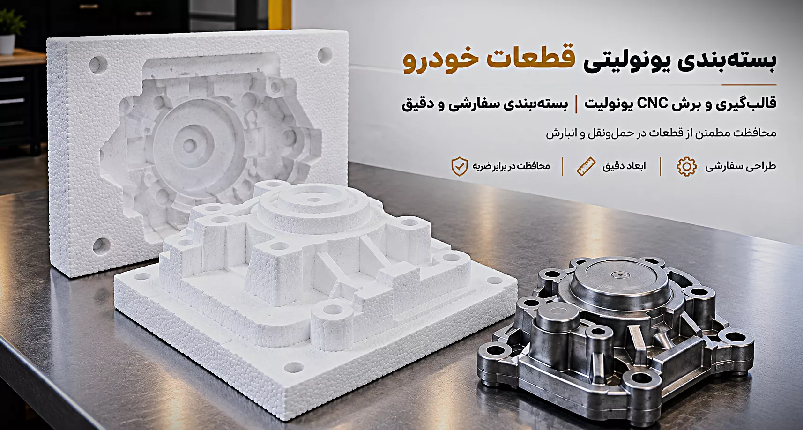
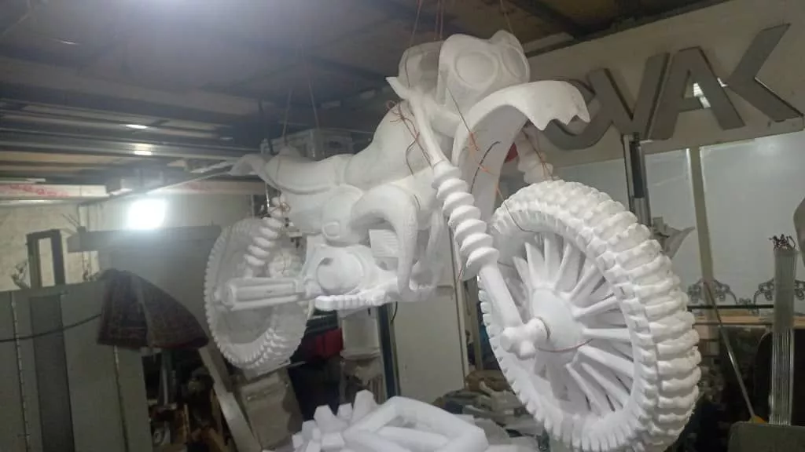
نمونهکارهای منتخب
پروژههای اجراشده،
با ابعاد و کاربرد
هر پروژه با متریال، ابعاد و کاربرد مشخص اجرا شده است؛ از المان حجمی محوطه و دکور صحنه تا محافظی که محصول را سالم به مقصد میرساند.
سفارش پروژهی خود ←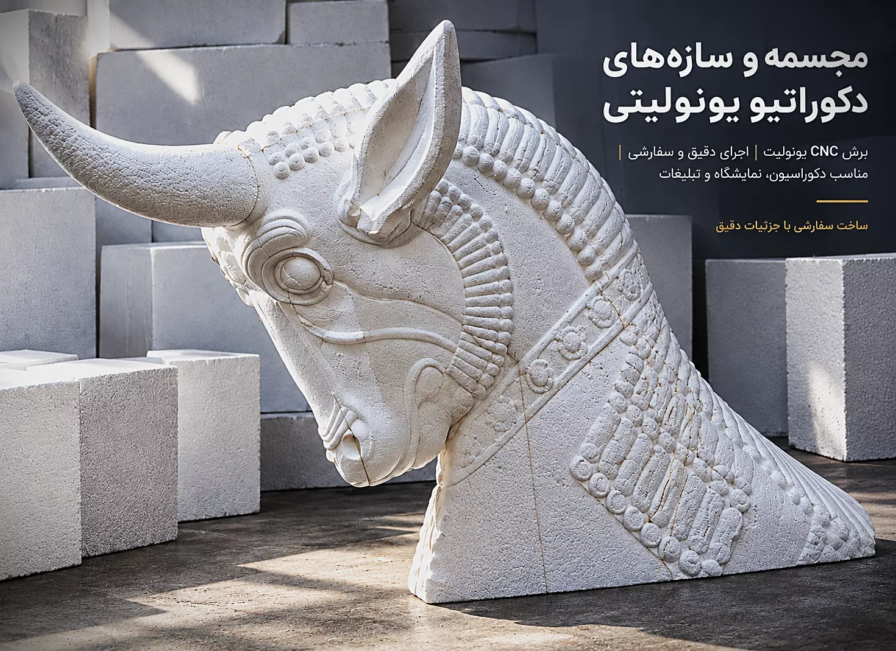
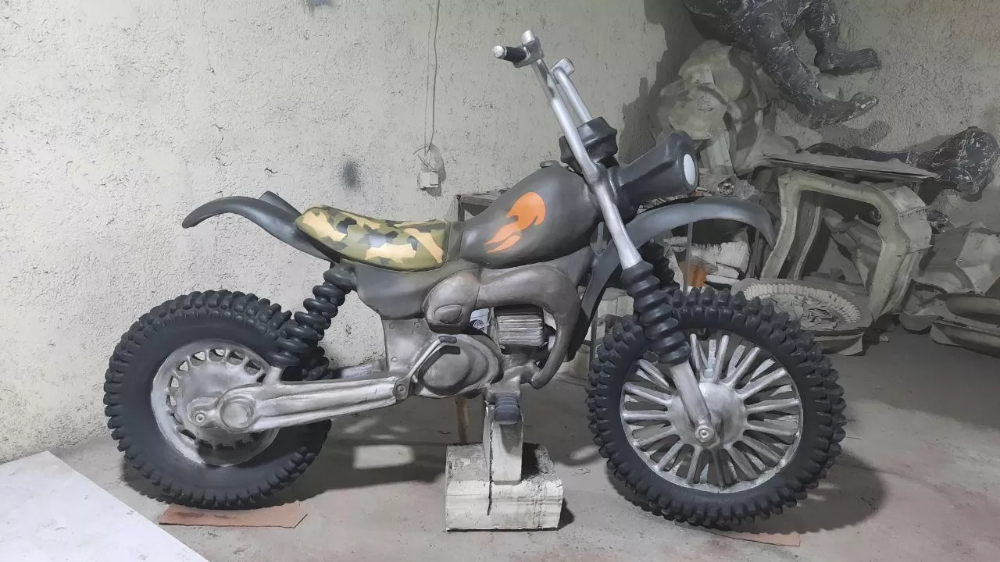

پروژههای شاخص
سه نمونهٔ واقعی،
سه کاربرد متفاوت.
از المان حجمی محوطه تا لوگوی سهبعدی برند و حروف برجستهٔ نمایشگاهی؛ هر تصویر یک پروژهی اجرایشده با یونولیت (فوم EPS) و برش CNC است. دستهٔ کامل هر پروژه را در آرشیو نمونهکارها ببینید و مرزهای کاربرد آن را در کاربردها و صنایع بررسی کنید.
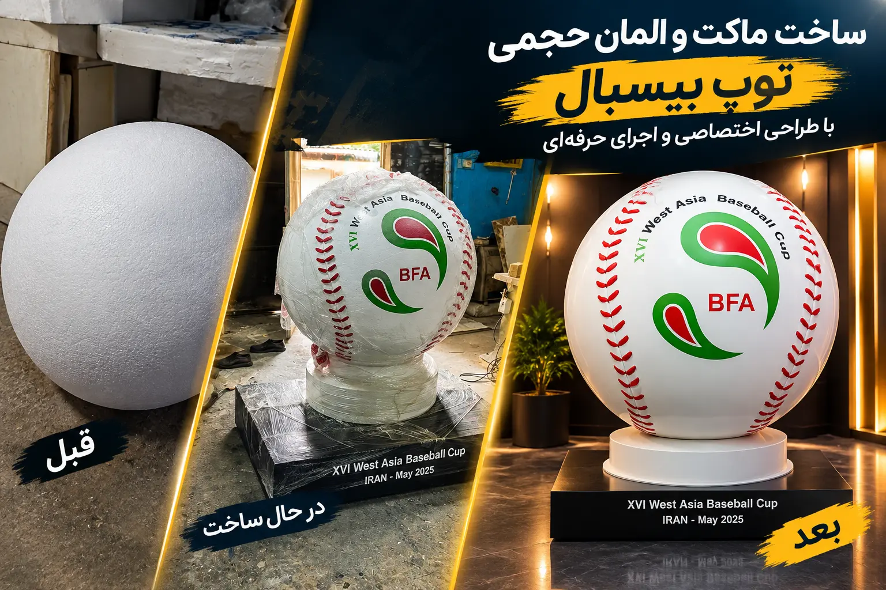
ماکت و المان حجمی
المان حجمی توپ بیسبال؛برش با فرزcnc,پرداخت و پوشش و رنگ,و در نهایت نصب و اجرا
این قطعه در سه مرحله ثبت شده است: ساخت حجم با یونولیت، تراش و یکدستکردن سطح و در نهایت پوشش و رنگآمیزی صنعتی. وزن کم، نصب آن را بدون سازهای سنگین ممکن کرد.
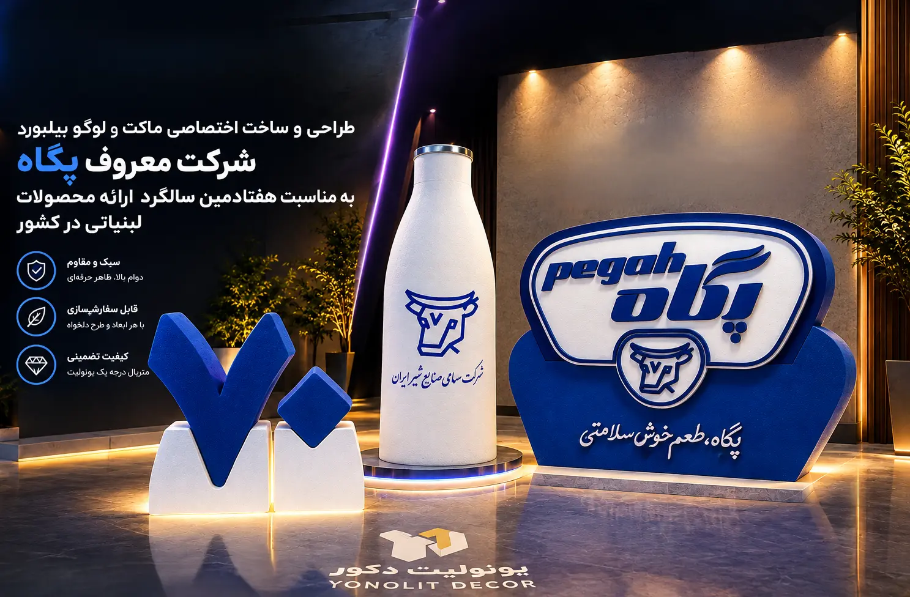
تبلیغات محیطی و برندینگ
لوگوی سهبعدی برند و ماکت محصول
نشان حجمی برند و ماکت بطری برای معرفی محصول در مراسم سالگرد ساخته شدند. سطحِ پوششدادهشده و لبههای تمیز، نشان را از فاصلهی دور خوانا نگه میدارند.
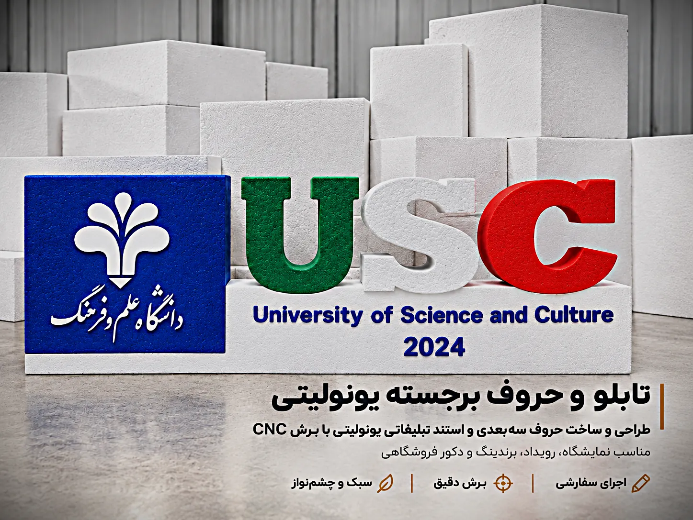
تابلو و حروف برجسته
حروف برجسته و تابلوی نمایشگاهی
حروفِ برجستهٔ یونولیتی با برش CNC روی پایهای بلوکی مونتاژ و رنگآمیزی شدند؛ مناسب استند نمایشگاهی، رویداد دانشگاهی، ورودی همایش و دکور فروشگاهی.
چطور ساخته میشود؟
هشت مرحله،
از فایل تا نصب
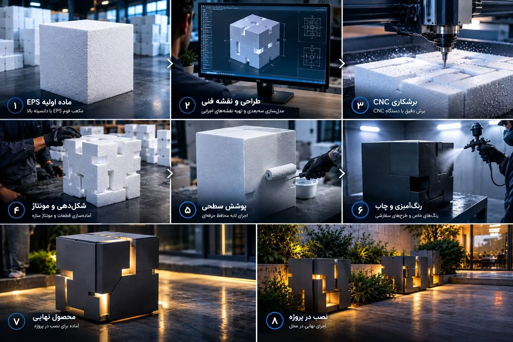
- 01ماده اولیه EPSبلوک EPS با دانسیتهی متناسب کاربرد: تراکم بالاتر برای لبههای تیز و جزئیات ریز، تراکم پایینتر برای حجمهای بزرگ و سبک.
- 02طراحی و نقشه فنیمدلسازی سهبعدی از فایل یا اسکچ شما، سپس نقشهی اجرایی با ابعاد نهایی، محل اتصال قطعات و ترتیب مونتاژ. قبل از برش تأیید میشود.
- 03برشکاری CNCبرش سهبعدی با فرز CNC روی فوم: لبهی عمود، سطح منحنی و حروف برجسته با دقت عددی. قطعات بزرگتر از بلوک، چند تکه برش میخورند.
- 04شکلدهی و مونتاژاتصال قطعات با چسب مخصوص EPS، پین و سازهی داخلی در صورت نیاز؛ بعد شکلدهی نهایی و کنترل ابعاد با نقشه.
- 05پوشش سطحیاجرای لایهی محافظ سخت (الیاف، رزین یا پوشش سیمانی) که سطح را در برابر ضربه و رطوبت مقاوم میکند و زیرسازی رنگ میشود.
- 06رنگآمیزی و چاپرنگ صنعتی، رنگ سازمانی برند یا چاپ طرح سفارشی. برای نصب در فضای باز، رنگ مقاوم به UV انتخاب میشود.
- 07محصول نهاییبازبینی ابعاد، پرداخت لبهها و بستهبندی حمل. قطعات شمارهگذاری میشوند تا مونتاژ در محل بدون سردرگمی انجام شود.
- 08نصب در پروژهحمل، مونتاژ در محل و تحویل نهایی. برای نمایشگاه و رویداد، نصب در بازهی زمانی محدود و معمولاً یکروزه انجام میشود.
کاربردهای واقعی
پنج صنعت که
با EPS ساخته میشوند
سبکسازی، سرعت اجرا و آزادی شکلدهی، یونولیت را برای پروژههای پرجزئیات به انتخابی هوشمند تبدیل میکنند. فهرست کامل صنایع و مرزهای استفاده از این متریال در کاربردها و صنایع آمده است.
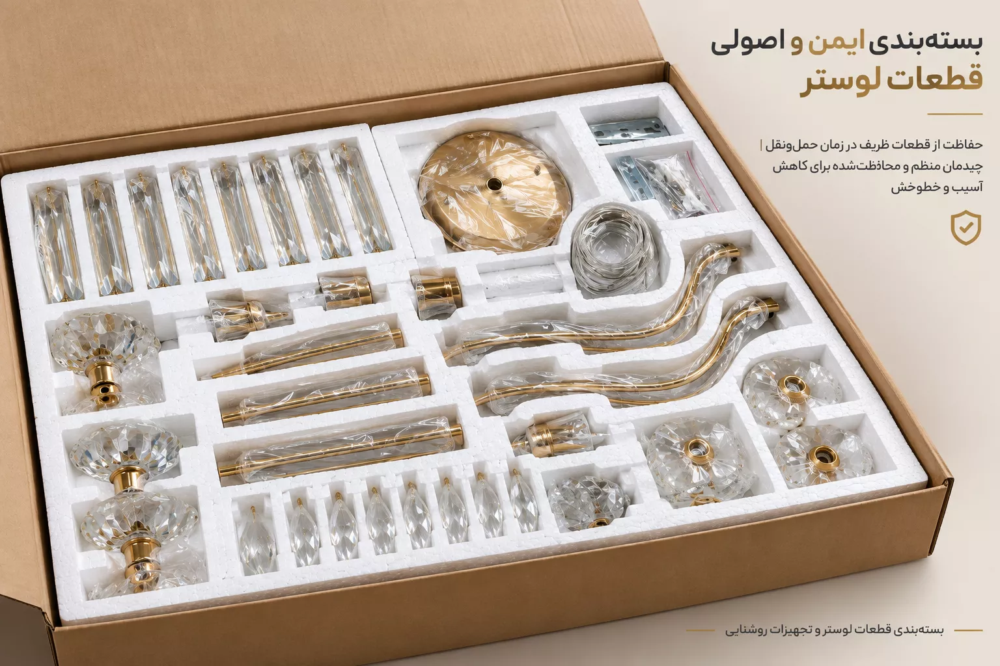
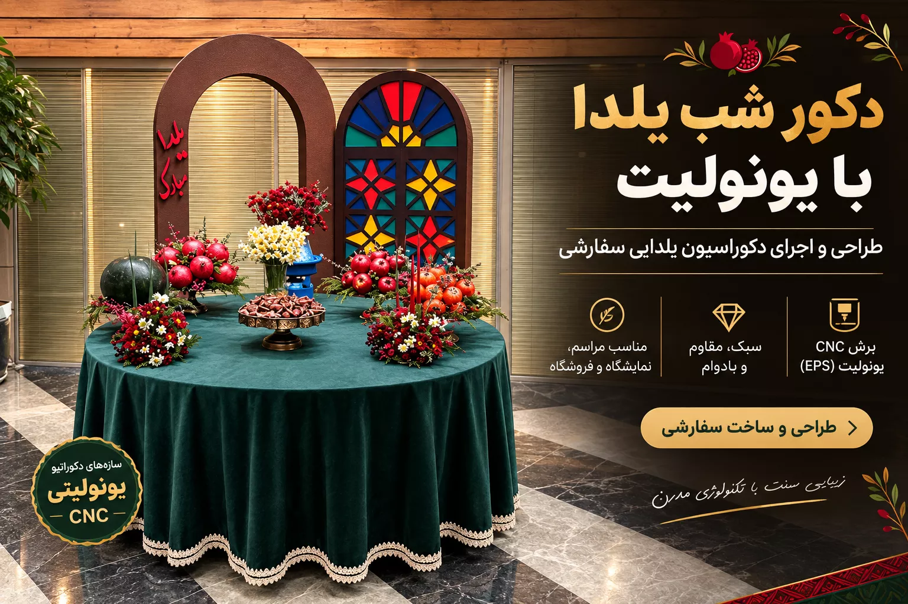
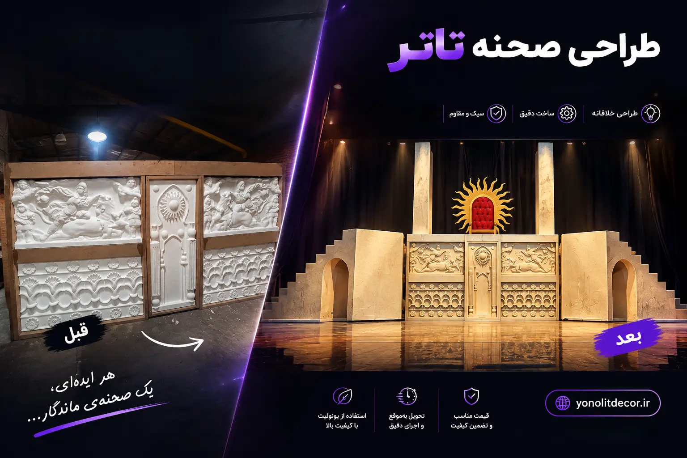
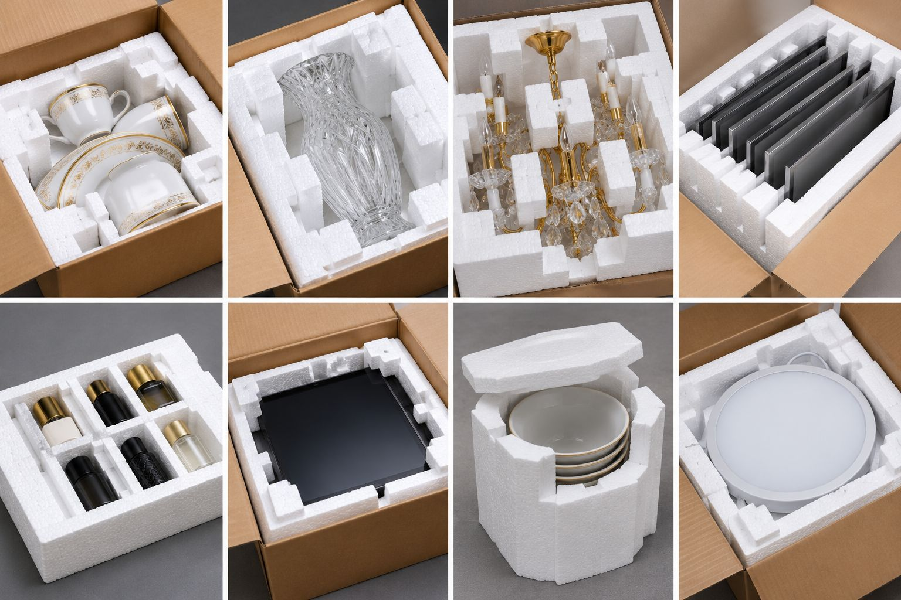

متریال را بشناس
یونولیت چیست
و کجا جواب نمیدهد
یونولیت همان فوم EPS است: پلیاستایرن منبسطشده با وزن کم و فرمدهی آسان. برای المان بزرگ و ماکت انتخاب اول است؛ اما بدون پوشش، در برابر UV و ضربه دوام ندارد و بار سازهای تحمل نمیکند.
بررسی پروژهی من ↗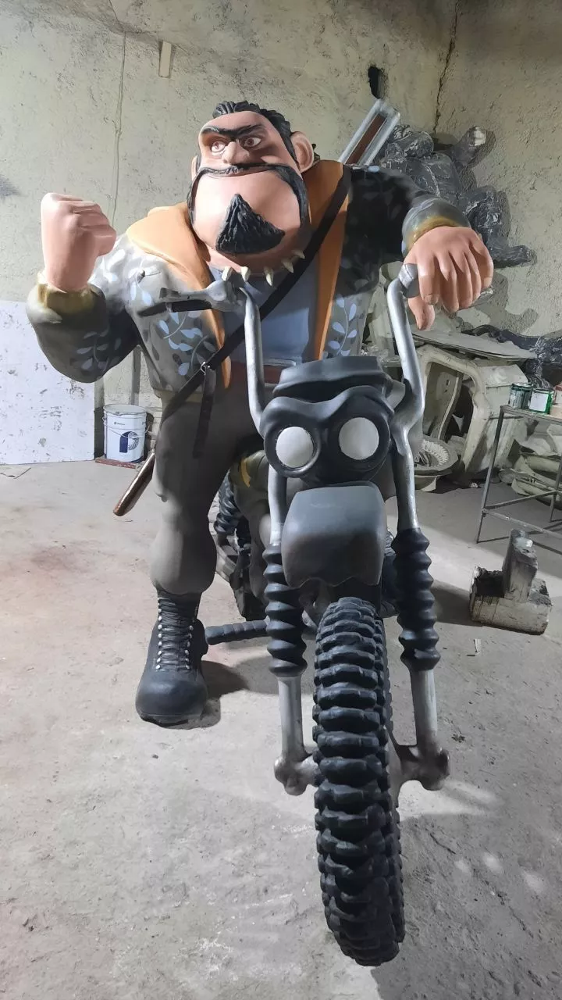
آرشیو تصویری
آرشیو پروژهها
با فیلتر دسته
شروع کنیم؟
فایل یا ابعاد را بفرستید،
برآورد بگیرید.
برای برآورد سه چیز لازم است: ابعاد تقریبی، محل نصب و تاریخ تحویل. فایل سهبعدی داری؟ همان را بفرست. نداری؟ یک عکس یا اسکچ کافی است.
EPS
STUDIOFORM FOLLOWS FUNCTION
STUDIOFORM FOLLOWS FUNCTION
پرسشهای پرتکرار
قبل از شروع،
بدانید.
یونولیت دقیقاً چه متریالی است و چه تفاوتی با پلاستوفوم دارد؟+
یونولیت نام رایج پلیاستایرن منبسطشده (EPS) در ایران است؛ همان متریالی که در بازار با نام پلاستوفوم هم شناخته میشود. تفاوت اصلی در دانسیته (تراکم) و کاربرد است؛ برای کارهای دکوراتیو از بلوک با تراکم بالاتر استفاده میشود تا لبهها تمیز برش بخورند.
چه پروژههایی را میتوان با یونولیت و برش CNC اجرا کرد؟+
چهار دستهٔ اصلی: استند و تبلیغات محیطی، دکور صحنه و مراسم، ماکت و مجسمهٔ حجمی، و قالب و بستهبندی سفارشی. از المان کوچک رومیزی تا سازهٔ بزرگ محوطه، بسته به ابعاد و محل نصب بررسی میشود.
آیا دکور یونولیتی در برابر ضربه و آب مقاوم است؟+
یونولیت خام مقاوم نیست؛ اما با پوشش سطحی (الیاف، رزین یا رنگ صنعتی) در برابر رطوبت و ضربه مقاوم میشود. نوع پوشش بر اساس محل نصب انتخاب میشود: داخلی، بیرونی یا حملونقل.
یونولیت چه مزیتی نسبت به بتن یا گچ دارد؟+
وزن کمتر (نصب بدون جرثقیل)، سرعت ساخت بالاتر، آزادی فرمدهی بیشتر و هزینهی نصب پایینتر. در عوض، بدون پوشش دوام کمتری دارد و برای بار سازهای استفاده نمیشود.
آیا برای فضای بیرونی هم مناسب است؟+
بله، با پوشش ضدآب و رنگ ضد UV. برای المان شهری و محوطه، ضخامت پوشش و نحوهی اتصال به پایه مهمتر از خود متریال است.
برای ثبت درخواست ساخت چه اطلاعاتی لازم است؟+
کاربرد قطعه، محل نصب (فضای داخلی، بیرونی یا حملونقل)، ابعاد تقریبی و تاریخ تحویل. تصویر مرجع یا فایل سهبعدی برآورد را دقیقتر میکند، اما الزامی نیست.
هزینهٔ ساخت با یونولیت چطور محاسبه میشود؟+
پنج متغیر: دانسیته و حجم فرم، پیچیدگی برش و تعداد قطعات، نوع پوشش و رنگ، حمل و نصب در محل، و مهلت تحویل. عدد قطعی از روی تصویر قابل تعیین نیست.
مسیرهای مرتبط
صفحههای کلیدی سایت
هر لینک، یک تصمیم مشخص را کوتاه میکند: قیمت، متریال، نمونه یا درخواست.